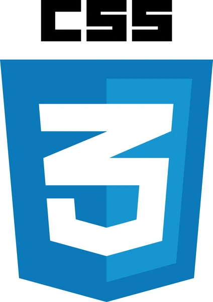
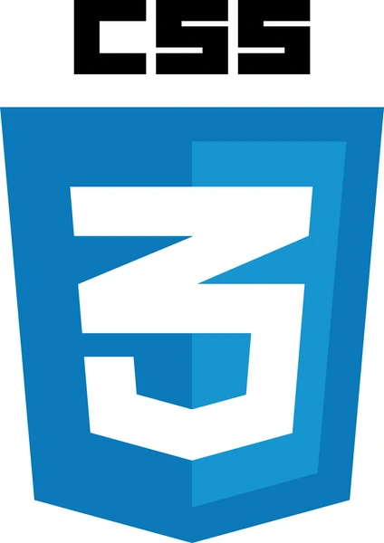

Moi! 👋 Olen
Sini Järveläinen,
matematiikan aineenopettajaopiskelija.
Mahtavaa, että löysin sivuilleni. Täällä voit tutustua minuun ja nähdä näytteitä töistäni. Ota rohkeasti yhteyttä mistä tahansa syystä — oli se sitten kysymys, yhteistyöidea tai ihan vain ajatusten vaihtaminen! 😊
Ota yhteyttä
Minusta
Olen tuleva matematiikan ja tietojenkäsittelytieteen opettaja. Valmistuin luonnontieteiden kandidaatiksi keväällä 2024, ja nyt teen maisteriopintoja.
Minua kiinnostaa erityisesti, miten matemaattiset ja ohjelmointiin liittyvät aiheet voidaan tehdä helposti ymmärrettäviksi ja kiinnostaviksi.
Tavoitteenani on tehdä oppimisesta innostavaa — samalla itsekin jatkuvasti oppien.
Mikä minua inspiroi ja vie eteenpäin?
Ongelmanratkaisu
Rakastan uppoutua ongelmien ratkaisuun — se on sekä palkitsevaa että kehittävää.
Oivaltamisen ilo
Yksi palkitsevimmista asioista on nähdä, kun joku oivaltaa ja ymmärtää jotain uutta. Se inspiroi minua auttamaan ja etsimään keinoja tehdä oppimisesta innostavaa.
Oppimateriaalien tekeminen
Työstän parhaillaan YouTube-kanavaprojektiani, jossa tavoitteenani on tuottaa selkeitä, innostavia ja visuaalisesti houkuttelevia matematiikan oppimateriaaleja nuorille heille tutulla alustalla.
Uteliaisuus
Olen ylpeästi ikuinen oppija. Viime aikoina olen opiskellut videoiden tekemistä.
Merkityksellinen tekeminen
Uskon, että jokainen voi löytää oman juttunsa. Minulle opettaminen on tapa tehdä työtä, jolla on oikeasti merkitystä.
Rauhallisuus ja pitkäjänteisyys
Nämä ovat vahvuuksiani, joita hyödynnän ongelmanratkaisussa, opettamisessa ja omassa oppimisessani.
Keskustelu ja vuorovaikutus
Vaikka on tärkeää, että on olemassa erilaisia opiskelumahdollisuuksia, mukaan lukien itseopiskelu, niin usein parhaat ideat ja oivallukset syntyvät keskustelemalla ja tekemällä yhdessä.
Aitous
Opettajana haluan kohdata oppilaat yksilöinä ja näyttää heille, että olen oppimassa yhdessä heidän kanssaan.
Luonto ja hyvinvointi
Vapaa-ajallani viihdyn luonnossa. Erityisesti polkujuoksu, bikepacking ja nuotioruokailu innostavat. Luonto antaa voimaa — se on minulle myös paikka löytää uusia ideoita ja palautua.
Projektit
.png)
Responsiiviset verkkosivut
Tässä projektissa pääsin ideoimaan ja luomaan verkkosivut, jotka toimivat sujuvasti eri laitteilla. Jos luet tätä sivustoa tietokoneella, voit kokeilla muuttaa selainikkunasi kokoa ja katsoa, miten sivusto reagoi siihen. Sivusto on suunniteltu responsiiviseksi. Voit myös katsoa, miltä verkkosivuni näyttävät, kun käytät niitä mobiililaitteella.
Tänä päivänä verkkosivuilla vieraillaan monenlaisilla laitteilla ja on tärkeää, että verkkosivut ovat saavutettavissa sekä puhelimen pienellä näytöllä että pöytäkoneen suurella näytöllä. Verkkosivujen ulkonäkö ja toiminnot muuttuvat sen mukaan, minkä kokoinen selain on käytössä.
Toteutuksessa käytin HTML:ää ja CSS:ää ja työskentelin Linux-ympäristössä.
 



.png)
Matematiikan opetusvideo
Videolla "Kolmion kulmien summa" käydään läpi geometrinen todistus sille, että kolmion kulmien summa on 180°. Video on suunnattu lukiolaisille ja yläkoululaisille, ja se on tehty lukion MAA3 Geometria -kurssille sopivaksi materiaaliksi. Videota voi käyttää opetustilanteessa tai itseopiskelussa.
Videon on tarkoitus olla selkeä ja helposti ymmärrettävä. Selkeyttä luovat kuvat, värien käyttö ja yhtäaikainen puhuttu selitys. Videon on tarkoitus olla nuorelle mielekästä katsottavaa, ja siksi se on lyhyt ja värityksessä on haettu moderniutta ja tyylikkyyttä. Videoon on saatavilla tekstitys, mikä tuo saavutettavuutta.
Katso video YouTubessa

Tämä projekti on ollut erittäin antoisa, ja opetusvideoiden tekeminen on minulle mielekästä. Aloittelenkin juuri YouTube-kanavaprojektini, jonka parissa työskentelen toivottavasti tänä vuonna enemmänkin. Tarkoituksenani on tarjota nuorille matematiikkasisältöinen kanava, josta löytyy selkeitä ja tyylikkäitä opetusvideoita ilmaiseksi. Alustana YouTube tavoittaa yläkoululaiset ja lukiolaiset. Ihmisten keskittymiskyky on yleisesti heikentynyt, ja voin olla edistämässä nuorten oppimista tekemällä videoista tarpeeksi lyhyitä, selkeitä ja visuaalisesti kiinnostavia. Tässä esitelty video on tuosta projektista ensimmäisen videon ensimmäinen versio.
Projektissa käytin Xournal++ -ohjelmaa matematiikan piirtämiseen ja selittämiseen sekä CapCutia videoiden editointiin.

Lyhytvideo
Tämän julkaisun idea on tavoittaa nuoria ja herättää kiinnostusta matematiikkaan. Samalla näinkin lyhyellä videolla on myös opetuksellista arvoa, kun siinä käydään läpi yhtälönratkaisua. Video on lyhyt ja nopeatempoinen, koska tarkoituksena on saada nuori katsomaan video kokonaan. Video on tekstitetty, ja siksi sen voi katsoa kokonaan myös äänittä. Lyhytvideoiden avulla matematiikka voi tavoittaa nuoria arjessa. Videon voi julkaista YouTube short -videona tai TikTokissa.
Katso video YouTubessa
Matematiikan kirjoittaminen on tehty ohjelmalla Xournal++ ja video on editoitu CapCutilla.

Geogebra-appletti
Interaktiivinen matematiikan työkalu, jonka avulla voidaan visualisoida laskuja.
Toteutin GeoGebralla interaktiivisen mallin, joka havainnollistaa kolmion kulmien summaa. Käyttäjä voi itse muuttaa kolmion muotoa ja nähdä samanaikaisesti muutoksen seuraukset. Appletti tukee aktiivista tutkimista ja oppimista. Appletti on julkaistu GeoGebrassa ja sen voi löytää kohdasta "Materiaalit" hakusanoilla "kolmion kulmien summa" tai "sini järveläinen". Pääset applettiin myös suoraan oheisesta linkistä.
Siirry applettiin GeoGebrassa
Tämä projekti on tehty kokonaan GeoGebralla.

Kandidaatin tutkielma: Kirjallisuuskatsaus konvekseihin funktioihin
Kirjoitin kandidaatintutkielmani konvekseista funktioista. Tutkielma on kirjoitettu siten, että se voi toimia oppimateriaalina yliopisto-opiskelijalle. Kirjoitin kandidaatintyöni keväällä 2024, ja se sai arvostelussa arvosanan 5 asteikolla 1—5. Oheinen linkki avaa tutkielman pdf-tiedostona uuteen välilehteen.
Avaa PDF-tiedostoTämä työ on laadittu LaTeX-ladontajärjestelmällä.
Koulutus
2024 —
Filosofian maisteri | Matematiikan, fysiikan ja kemian opettajan maisteriohjelma, opintosuuntana matematiikka
Helsingin yliopisto
Opiskelen matematiikan aineenopettajaksi. Toinen opetettava aineeni on tietojenkäsittelytiede. Maisteriopinnoissa matematiikan rinnalle ovat tulleet pedagogiset opinnot, jotka ovat avanneet syvällisempää näkemystä oppimisprosessiin. Vaikka aineenhallinta on keskeistä aineenopettajan työssä, niin pedagogiset taidot ovat välttämättömiä, jotta oppilaat voivat todella ymmärtää ja omaksua opetetut asiat.
2019 — 2024
Luonnontieteiden kandidaatti | Matematiikan, fysiikan ja kemian opettajan kandiohjelma, opintosuuntana matematiikka
Helsingin yliopisto
Aloitin yliopisto-opintoni tietojenkäsittelytieteen kandiohjelmassa, mutta matematiikka vei mukanaan ja vaihdoin opettajalinjalle, jossa voin yhdistää aineet. Minua kiinnostaa myös, kuinka ohjelmointitaitoja voi hyödyntää matematiikassa. Tällä hetkellä lukion ohjelmoinnin opetus on myös OPS:ssa sisällytetty matematiikkaan.
2013 — 2016
Merkonomi | Talous- ja toimistopalvelut
Suomen Liikemiesten Kauppaopisto
Koulutus antoi käytännön liiketoiminta- ja taloustaitoja, ja kiinnostukseni matematiikkaan ja numeroiden kanssa täsmälliseen työskentelyyn oli vahvaa jo tuolloin.
2008 — 2011
Ylioppilas
Joroisten lukio
Työkokemus
05/2014 — 09/2024
Pikaruokamyyjä
Lone Star Oy
Työskentelin 10 vuoden ajan, pääasiassa opintojeni ohella ja loma-aikoina, tiiviissä tiimissä kiireisellä drive in -kioskilla. Työ vaati tehokasta toimintaa, hyvää paineensietokykyä, joustavuutta ja saumatonta yhteistyötä työkaverin kanssa. Kiireisessä ympäristössä oli tärkeää pysyä sinnikkäänä ja järjestelmällisenä. Työ tehtiin ripeästi mutta huolellisesti. Asiakaspalvelussa kohtasin monenlaisia ihmisiä ja opin arvostamaan ystävällistä ja selkeää viestintää sekä joustavaa asennetta. Työn tekeminen hyvällä energialla ja positiivisella asenteella oli osa arkea.
01 — 06/2016
Talousassistentti, työssäoppiminen
Conwe Oy / matkavaruste.fi
Hoidin myynti- ja ostotilauksia sekä -laskuja, lisäsin ja hinnoittelin tuotteita verkkokauppa-alustalle sekä ohjeistin muita harjoittelijoita. Harjoittelu kehitti organisointi- ja yhteistyötaitojani sekä antoi kokemusta verkkokaupan ylläpidosta.
04 — 05/2014
Taloushallinnon avustavat tehtävät, työssäoppiminen
Vantaan Nicehearts ry
06 — 08/2013 ja
06 — 08/2012
Vierasvenesataman hoitaja, kausityö
SMPS, Varkauden Järvipelastajat ry
09/2012 — 05/2013
Pikaruokamyyjä
Kauppasuma Oy
06 — 08/2011
Museo-opas ja viheralueiden hoitaja, kausityö
Joroisten 4H-yhdistys ry
Muu kokemus
2019 — nykyhetki
Tutorointi
Lähipiiri
Olen auttanut ystäviä ja tuttuja saavuttamaan opiskelutavoitteitaan, lähinnä matematiikassa, tarjoamalla yksilöllistä ohjausta. Kokemus on kehittänyt viestintätaitojani, kykyäni tehdä monimutkaisista asioista ymmärrettäviä sekä opettamiseen liittyvää osaamistani. Esimerkiksi olen auttanut erästä valmistautumaan pääsykokeiden tilastotieteen osioon ja toisen kanssa olemme harjoitelleet lääkelaskuja. Olen saanut positiivista palautetta opetuksesta ja kiitosta kärsivällisyydestäni.
Yhteystiedot
sini.jarvelainen@gmail.comssihni